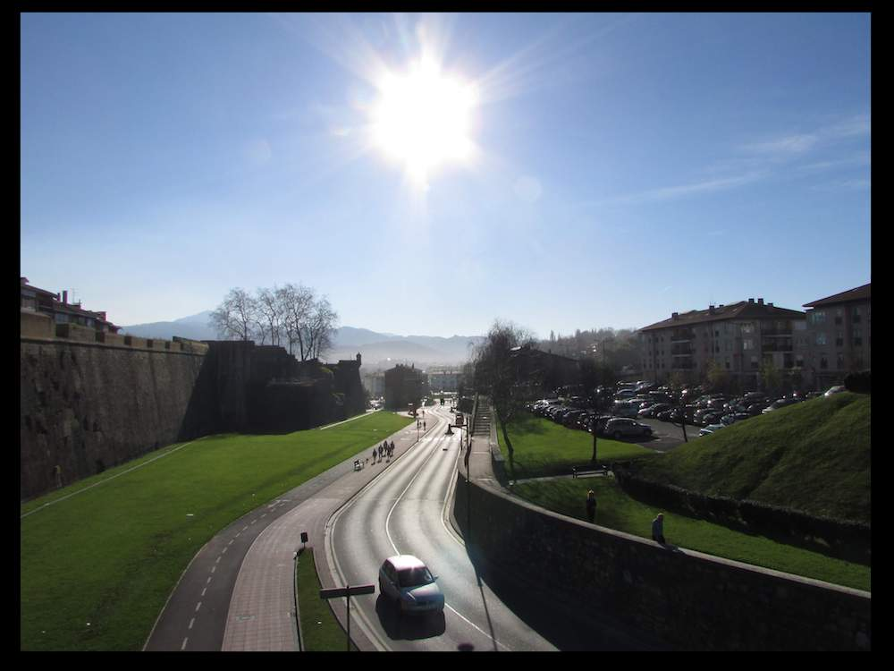

As a South African studying in America, I was very concerned about SAD when crossing the pond. SAD refers to 'Seasonal Affective Disorder', a condition that generally affects people who move from warm (sunny) climates to cold, gloomy climates. The name is apt -- the primary symptom sadness. Currently, it is believed that SAD is caused by a change in light levels -- specifically, a decrease in exposure to light, and so the best known treatment is light therapy. Some individuals attempt to remedy the SADness with vitamin D supplementation, though the evidence for vitamin D's efficacy is predominantly anecdotal.

This is the climate that I left behind....
And this is my new climate. Okay fine, perhaps the 'new climate' photo is slightly atypical, but that is a genuine photo (unedited) that I took in NYC, and there are certainly more days like that here than back in South Africa. My concern with SAD was never purely academic -- I had experienced my moods fluctuating with the seasons before (I'm far happier in the summer), and so I had good reason to expect a stronger reaction to the more drastic change.
I started thinking more about external light -- is there some way to cut through the gloom on unpleasant days? This isn't necessarily solely about the brightness, it's also about the 'type' of light. Even in the above image, the sun has almost set, and so there isn't much light in the shot, but it still looks pleasant overall. And, if fixing the external environment is too challenging (how many lumens would it take to transform an overcast day?), what can we learn about interior light from these external effects?
Consider the image above, what makes it 'happy'? I'd argue that it's a combination of two key elements -- hue, and brightness. The entire area is thoroughly illuminated with warm, orange light. Perhaps there's some instictive appeal to orange colouring -- it's the colour of the sun, and the colour of fire. White light does ocassionally appear naturally (on gloomy, overcast days), but it's predominantly an artificial phenomenon.
As a point of comparison, here's a typical hospital. Notice the white lights. I'm unsure of the justification for the choice of hue, but it does seem that almost all hospitals opt for white lights. Perhaps it's due to how indiscriminate white light is (everything is covered in a uniform glare). White light also seems 'septic' -- one imagines objects in white light to be spotlessly clean. An interesting note is that white light may require this (relative to orange light), for the reason listed above -- it's indiscriminate. Odds are, it would be very difficult to hide dirt in white light. This idea may give some intuition for why we feel white light to be so uncomfortable, perhaps we're subconciously aware of the heightened requirement for cleanliness. It could also just be an association -- most people don't feel comfortable in hospitals, and, similarly, people tend not to like the weather associated with white light. This does beg the question though -- do we dislike 'bad' weather because of white light, or did we dislike the weather first and then associate the hue with the weather?
The image above may serve as a counterexample, though, as I type this, I'm reconsidering. Above is a rare day where the sun seems to produce white light. It may serve as a counterexample, because this image isn't outwardly sombre. However, this may be due to the other elements in the image (the deep green grass, perhaps) and not the white sun. Moreover, I'd still argue that the image would be happier if the light were orange.
Here's the same image, edited with a 'light leak' effect in an attempt to add some orange sunniness. Did it work? You tell me. I think it's happier though.